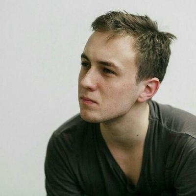
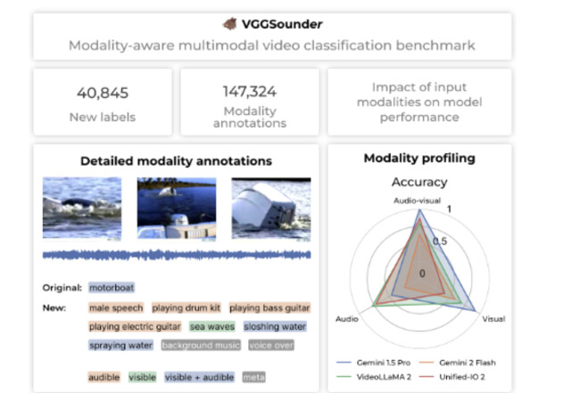
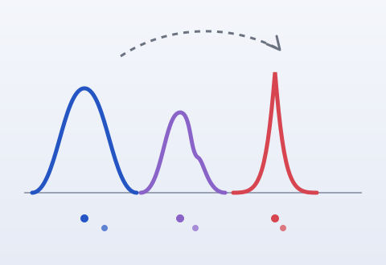

PhD student · Technical University of Munich & MCML
I am a PhD student at the Technical University of Munich and the Munich Center for Machine Learning (MCML), working with A. Sophia Koepke. My research is on multimodal learning. I currently work on long video understanding and audio-visual encoders: how foundation models combine what they hear with what they see, and how well their representations hold up over long videos.
Recently, I built VGGSounder, an audio-visual benchmark for foundation models (ICCV 2025), and examined the Platonic Representation Hypothesis at scale.

Back into Plato's Cave: Examining Cross-modal Representational Convergence at Scale
arXiv preprint, 2026
Cross-modal alignment, as measured by mutual nearest neighbours, degrades substantially when evaluation is scaled from thousands to millions of samples — models trained on different modalities learn equally rich representations, just not the same one.
@article{koepke2026plato,
title = {Back into Plato's Cave: Examining Cross-modal
Representational Convergence at Scale},
author = {Koepke, A. Sophia and Zverev, Daniil and
Ginosar, Shiry and Efros, Alexei A.},
journal = {arXiv preprint arXiv:2604.18572},
year = {2026}
}

VGGSounder: Audio-Visual Evaluations for Foundation Models
ICCV 2025
A comprehensively re-annotated, multi-label test set for audio-visual foundation models with per-modality annotations and a modality-confusion metric that reveals how models degrade when combining audio and video.
* equal contribution
@inproceedings{zverev2025vggsounder,
title = {VGGSounder: Audio-Visual Evaluations for Foundation Models},
author = {Zverev, Daniil and Wiedemer, Thadd{\"a}us and Prabhu, Ameya and
Bethge, Matthias and Brendel, Wieland and Koepke, A. Sophia},
booktitle = {Proceedings of the IEEE/CVF International Conference
on Computer Vision (ICCV)},
year = {2025}
}

On the Dangers of Bootstrapping Generation for Continual Learning and Beyond
DAGM GCPR 2025
A statistical and empirical study of training generative models on their own outputs, showing how synthetic data biases maximum-likelihood estimation and why generative replay collapses in continual learning.
@inproceedings{zverev2025bootstrapping,
title = {On the Dangers of Bootstrapping Generation for
Continual Learning and Beyond},
author = {Zverev, Daniil and Koepke, A. Sophia and Henriques, Jo{\~a}o F.},
booktitle = {DAGM German Conference on Pattern Recognition (GCPR)},
year = {2025}
}